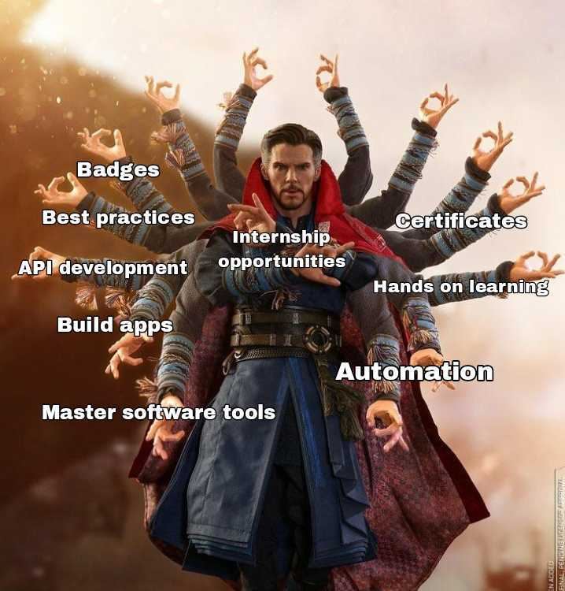
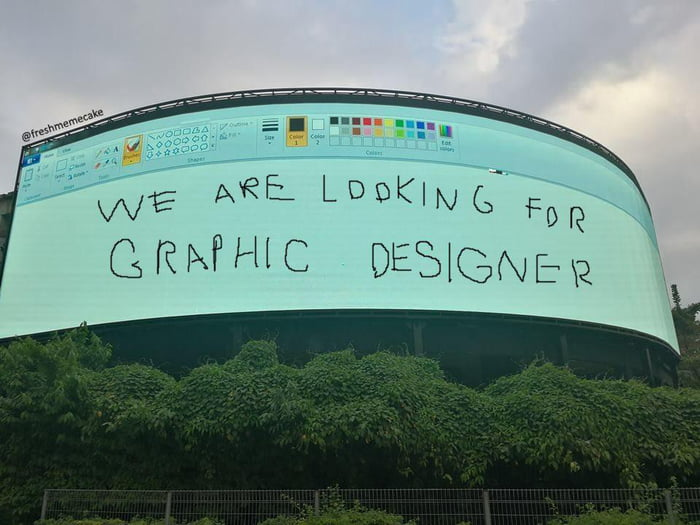

Congratulations, You're In!
Hey! Congratulations and Welcome to The Keploy API Fellowship Program.
You made it through the shortlisting phase. You are amongst those in whom we found a thing for learning and making it big. We'll get started soon, till then feel free to ask your doubts on our Slack channel.
✨ Grab Your Fellowship ID Card ✨TL;DR:
Congratulations on making it to the Keploy API Fellowship!
You've officially been selected to join an exclusive community of API builders, devs, and creators who are as passionate as you. Based on your background and your drive to learn and grow, you're now part of a space built for people who want to go from curious to crazy-skilled - building apps from scratch, contributing to open source, learn about APIs, integrate them with applications, test them professionally with best practices and launch them, all while having fun and creating things that are genuinely dope.
As a GSoC(Google Summer Of Code) community, we believe in giving back to open source and community - for free. This is your safe space, your home, your playground. You'll have the freedom to learn fast, break things (safely), build things (as if it's a piece of art) and launch even faster - without owing us anything but good energy and a passion to grow. You're here because you belong here.
What's in Store for You? 🎁
- Open Source Tools: Learn to use and master tools like Git, GitHub, and other open-source utilities that'll support you not just during the fellowship, but throughout your dev journey.
- App Building from Scratch: Start from the basics of building websites and applications, fall in love with the process, and scale up to creating bigger, more advanced apps.
- API Development & Automation: Learn how to build APIs, integrate them into your projects, test them effectively, and automate workflows so you can build and ship faster.
- Software Development Best Practices: Gain real-world knowledge from industry experts who'll share lessons from their own experiences - giving you practical insights that actually matter.
- Hands-on Learning: While there will be guidance and theory, the focus is on building. You'll get hands-on assignments and real tasks to help you apply what you've learned immediately.
- Badges & Certificates: After each phase, earn custom tech stack-specific badges and certificates. At the end of the fellowship, everyone receives official participation and completion certificates – every bit of effort gets rewarded.
- Hiring Opportunities: The best performers throughout the program will receive PPO-based internship opportunities at Keploy. We believe in giving a chance to everyone, so instead of shortlisting folks randomly, we'll be giving you a chance to prove yourself after each phase.
- Global Networking: Connect with a diverse group of talented peers from around the world. Learn from each other, collaborate on projects, and build lifelong connections in tech.
- A supporting community: Regardless of how long you make it to the program, you will always have people and a community along your side to support you and cheer for you. You can create projects, take help, talk about what you are building, where you are contributing, we'll be all ears and always ready to appreciate and help!
What's the vibe? ✨
Over our previous 5 batches, we've mentored and onboarded talented individuals from across the globe. the response? consistently overwhelming, in the best way possible.
At Keploy, we don't just run a program - we build a family. a place where every fellow feels at home, where you're surrounded by peers who uplift you, and mentors who are rooting for your growth every step of the way.The passion and energy from the past batches have inspired us beyond words - and we're reciprocating that love by making this cohort bigger, better, and packed with even more opportunities. we want you to grow to your fullest potential, and we'll be right there with you as you do so.
The opportunity awaits. Let's get it!
Throughout the fellowship, we'll be right by your side - guiding, supporting, and hyping you up. We'll host giveaways for top performers, and if you're putting in the work and bringing that good energy, expect shoutouts too - because we love recognizing awesome effort. The most exceptional fellows will unlock PPO-based internship opportunities at Keploy.
Even if you don't end up joining our team, your journey won't go unnoticed. After every phase, you'll earn custom badges and certificates that reflect your growth. And by the end of the program, every fellow will receive official participation and completion certificates. Above all, the real prize is the hands-on experience - you'll walk away with real projects, real confidence, and the skills you need to crush internships and job interviews ahead.
No strings attached 🔓
We want to emphasize that this entire program is completely free of cost with absolutely no hidden charges. We believe in investing in talent and helping you grow.
We're looking forward to an incredible two weeks of learning, building, and connecting. We hope you're as excited as we are to embark on this journey together!
Calling All Designers! 🎨
Help us create stunning visuals, improve user experiences, and shape Keploy's brand identity!
We're expanding our creative team with immediate joiners, we are looking for:
P.S. We especially love designers who geek out over dev tools!
Explore Our Writers Program ✍️
Get paid to write technical blogs on trending topics we provide - from API testing and software development best practices to cutting-edge tech trends! Each approved 800-1500 word article earns you competitive rates, with your work featured on Keploy's official channels. Whether you're breaking down complex testing concepts or analyzing the latest DevTools, we want your unique perspective!
Learn MoreCheers,
Team Keploy
Follow us to stay updated: